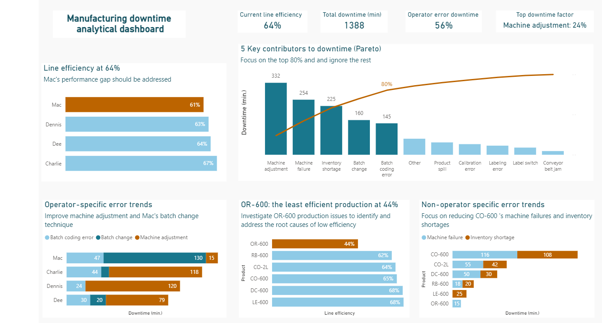
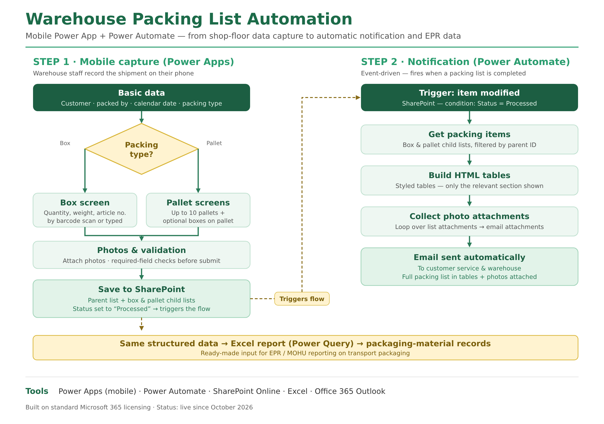

I turn shop-floor data into decisions — and repetitive work into automated flows
Data and automation analyst at a sheet-metal manufacturer. I query the ERP with Oracle SQL, report in Power BI, and automate everyday routines with Power Apps and Power Automate to save my colleagues’ time.
BI & Reporting
Power BI · DAX · Power Query M · Excel
Process automation
Power Automate · Power Apps · SharePoint · Planner
Data & SQL
Oracle SQL · INFOR ERP · SQL Server · Data modelling
AI at work
Claude · Microsoft Copilot · Copilot Studio (pilot)
Selected work

Manufacturing Downtime Analysis
A one-page Power BI dashboard on production-line downtime: what causes it, which operator and product are behind it, and what to fix first. Built on a Maven Analytics sample dataset.

Warehouse Packing List Automation
A mobile Power App replaces manual emails and calendar entries of the shipments by warehouse staff: structured box and pallet data, barcode scan, photos of the boxes, an automatic summary email to customer service, and ready input for EPR reporting.

Usage-Based Preventive Machine Maintenance
Every week, the run-hours of each machine are checked against its maintenance plan. When a maintenance is due, a Planner task is created with the right manual chapter. Once the technician completes it, the counter restarts.
I like factories and I like their data
I work across manufacturing analytics, business intelligence and process automation. I also administer the company's Microsoft 365 tenant, so I can take a solution from data model to deployed app.
I use Claude and Microsoft Copilot every day to review and test my code and to catch master data errors, and I lead AI adoption in the company through training and everyday support to colleagues.
I have always wanted to know what is behind things. My interest in data started with my running: I analysed the numbers from my Garmin watch and kept asking why they looked the way they did and what I could do to make them look even better by runnging faster. Digital marketing taught me to turn data into a story people understand. Today I do the same in a factory, with simple tools for the people who use them every day.